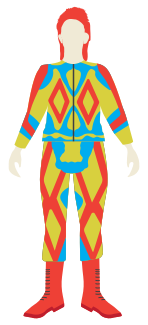
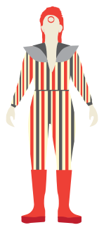
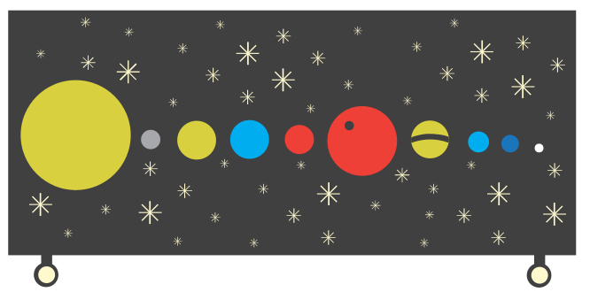
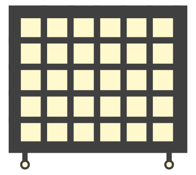
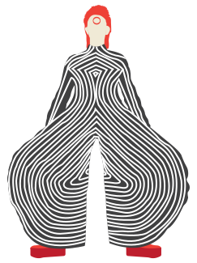

David Bowie, the man who fell to Earth, passed away at the age of 69, early in 2016, just after the release of his final album. Along with his musical achievements, was known for rapid costume changes on stage during concert performances. These costumes enhanced the concert and contextualized the songs he was performing, and also embodied the spirit of his music. These costumes also gave sense of depth to Bowie’s albums.


This is the signature Ziggy Stardust outfit, David Bowie’s alter-ego that tells the story of the album, Ziggy Stardust and the Spiders in Mars. This quilted two-piece suit was designed by Freddie Burretti in 1972 for the Ziggy Stardust tour.
Ziggy Stardust is “a human manifistation of an alien being who is attempting to present humanity with a message of hope in the last five years of its existence.”

This is the “Space Oddity” space suit, used for the 1972-73 Ziggy Stardust tour, designed by Kansai Yamamoto.
Ziggy has a rocksar persona, embracing sexuality and willing to be wild, while spreading love. This alter ego manifests in the music and in the costumes worn throughout the tour. The album was created with the intentions of bringing it to a live performance, hence the attention to detail to the costume and character development.

This is the “Life on Mars” costume, worn by Bowie in the music video. This “ice-blue” suit was also designed by Freddie Burretti in 1973.
This song was released in 1973 on Hunky Dory, an album that has a “kaleidoscopic array of pop styles, tied together only by Bowie’s sense of vision: a sweeping cinematic melange of high and low art, ambigoous sexuality, kitsch, and class.” These themes can be seen across Bowie’s attire worn on tours and in videos throughout the 70s.
Bowie portrayed is many alter-egos in his stage costumes. He portayed Aladdin Sane, the Americanized Ziggy Stardust, in costumes such as these in the 1973 and throughout his tours.

David Bowie was known to be somewhat of a Japanophile. Some of the most influential contemporary designers from Japan worked with Bowie to create his costumes. Kansai Yamamoto worked with him to create kimonos and knit bodysuits featured on his tours throughout the 70s.

This outfit is called Tokyo Pop, designed by Kansai Yamamoto in 1973 for the Aladdin Sane tour. His alter-ego, Aladdin Sane, or “Ziggy Goes to America” in Bowie’s words, represents the duality of mind in humanity, which comes across in the story told through his album.
Some critics believed the album showed that Bowie was “simultaneously appalled and fixated by America,” giving the album a deeper meaning.
This only a brief look into a very small part of Bowie’s work. Bowie was a true musical chameleon, as he was able to experiment with and master so many genres of music. Bowie will live on as a true entertainer, as he was able to tell epic stories throughout his many albums, and lived them on stage. This allows the fans to feel a deeper sense of connection to his music. His work touched so many fans, and will continue to do so in future generations.
R.I.P.
1947-2016